Project
Blokken printen met de kleiprinter
Uitzoeken hoe de kleiprinter werkt, de printbestanden voorbereiden met de Termite-template en de kleiblokken van het gekozen ontwerp printen, voor project 2 (digitale fabricage).

De opgave
Na de keuze voor het ontwerp moesten wij als printergroep de blokken printen. In het begin hadden we geen idee hoe de kleiprinter werkte en de informatie was beperkt.
Het proces
Samen met N. Morales en K. Afshar zocht ik uit hoe de kleiprinter werkt. Ik onderzocht de Termite-template, bereidde de bestanden voor en printte met hen de blokken. Hieronder staat elke stap, met de testprints en video's.
- Informatie zoeken over de kleiprinter (met twee anderen)
- De Termite-template onderzoeken en uitleggen
- Bestanden voorbereiden en de G-code exporteren
- Testprints maken en de instellingen aanpassen
- Blokken printen (met twee anderen)
Werk in detail
Onderzoek kleiprinter
Met N. Morales en K. Afshar zocht ik uit hoe de kleiprinter werkt, via video's van WASP 2040 en uitleg van de andere groep. Een groepslid vond de plug-in Termite en ik vond een template die laat zien hoe die werkt.
De template
Ik testte de template en legde hem uit aan de groep. In een test vervormde het tweede blok, dus sorteerden we het printpad zodat de printer laag voor laag per blok print.
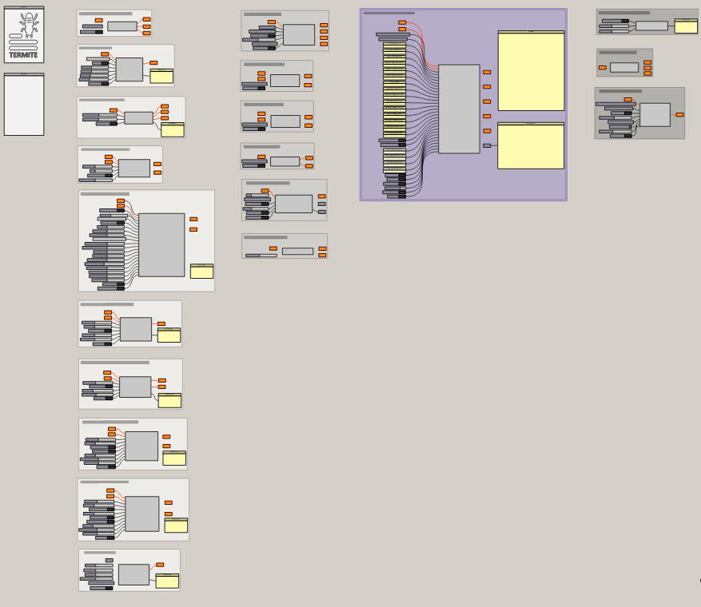
Bestanden voorbereiden
We tekenden het gekozen ontwerp in Rhino over met polylines; ik voegde alles samen, maakte een extrude en exporteerde de G-code. Na een testprint maakten we de blokken 2 cm en de opening van de pen-gatverbinding 4 mm groter.
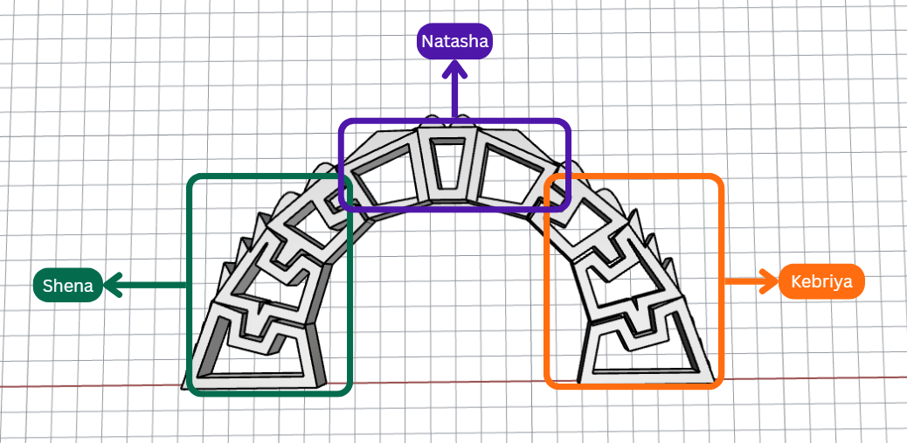
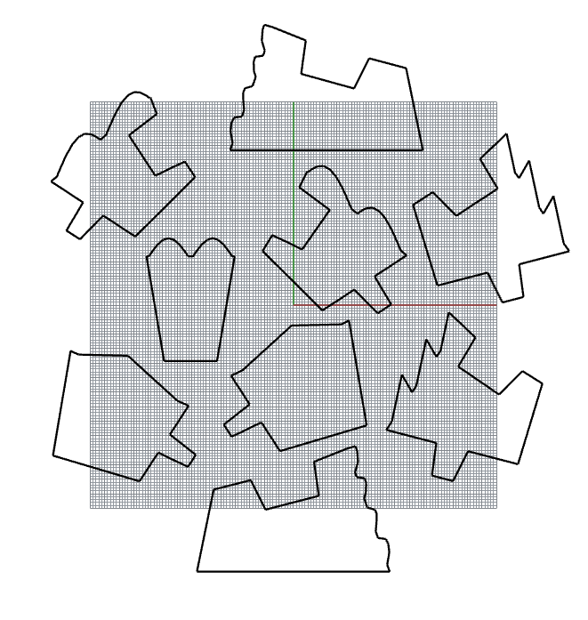
Testprints
De eerste prints mislukten door de instellingen; na aanpassingen aan onder andere de nozzle en de printsnelheid kwamen de lagen mooi op elkaar. Daarna printten we de blokken van het gekozen ontwerp.
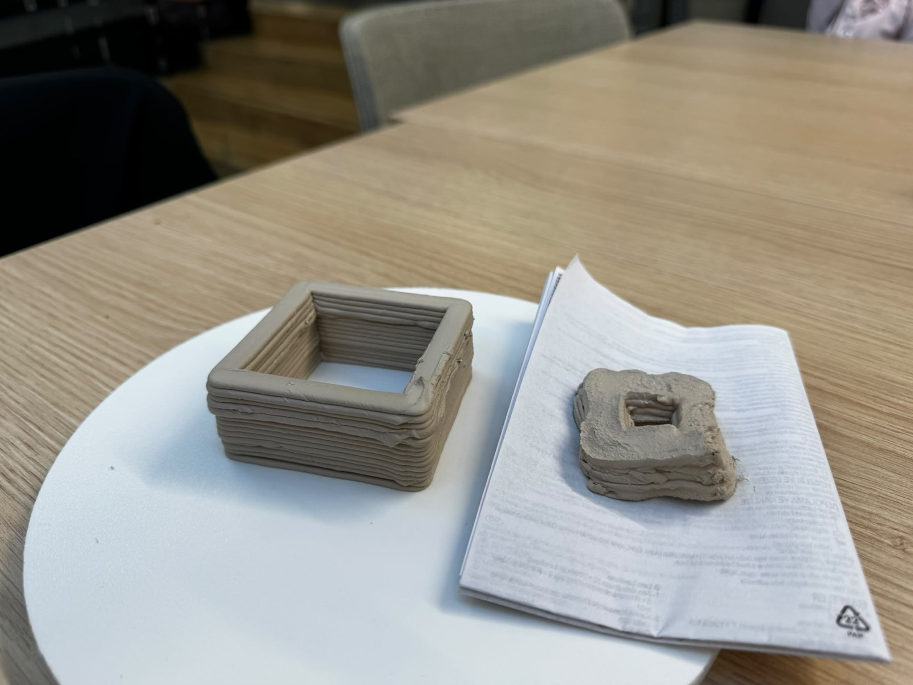
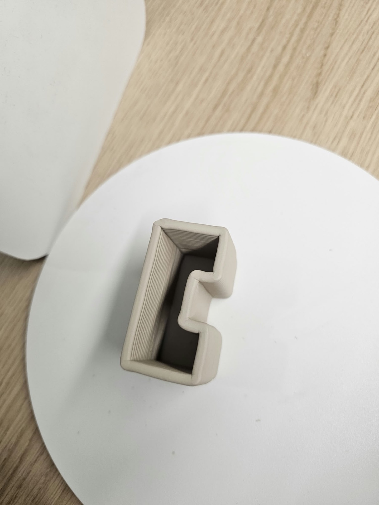
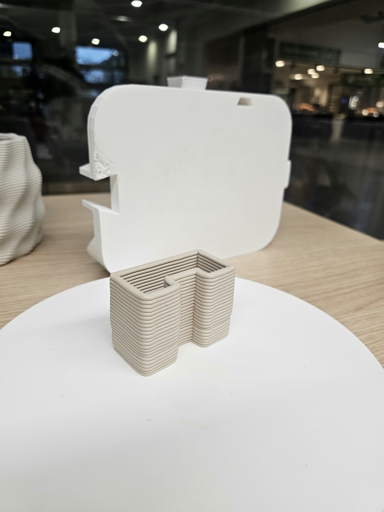
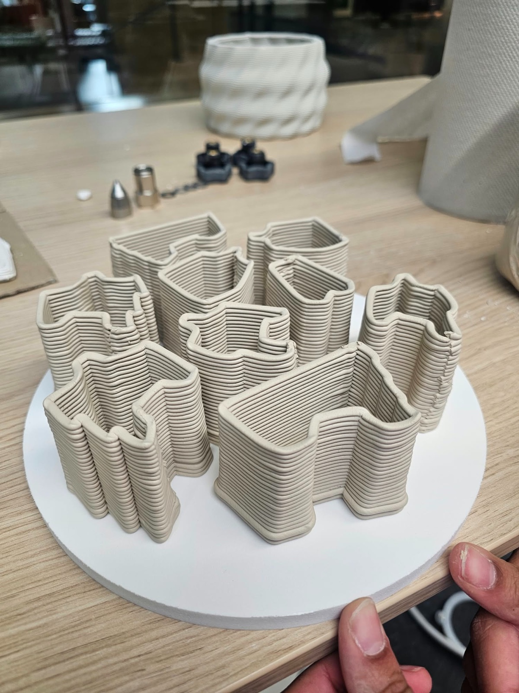
Trial-and-error
Sommige blokken braken en elke nieuwe klei printte anders, ook met dezelfde instellingen. Daarom printten we alle blokken op één dag.
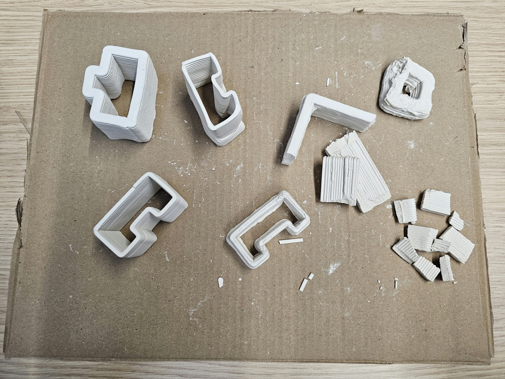
Blokken printen
Het voorbereiden van de printer duurde ongeveer 3 uur, onder andere door een harde slang en rommelige eerste prints; het printen zelf 24 minuten. Na veel pogingen is het gelukt en komen de blokken samen.
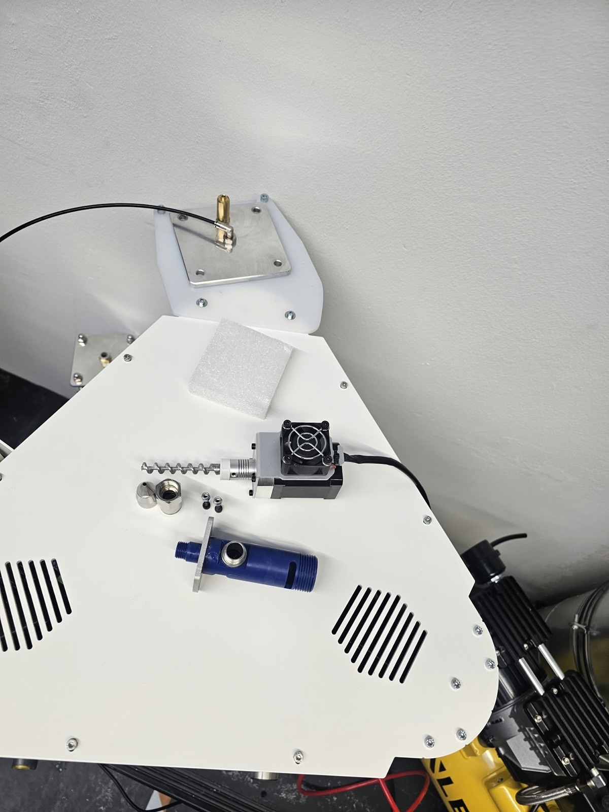
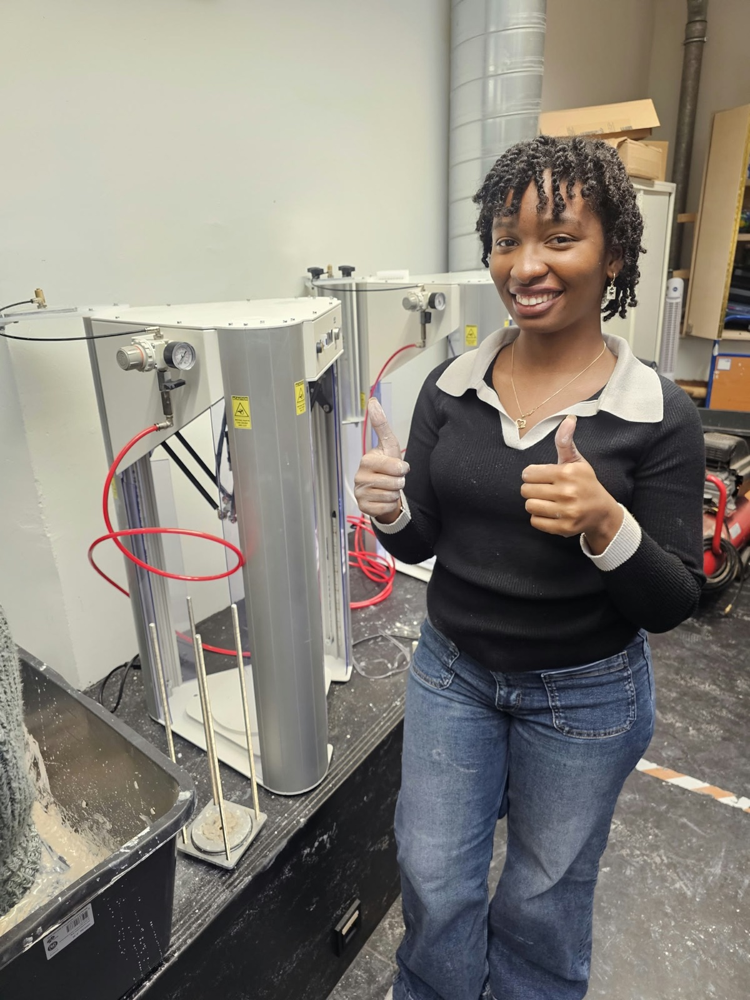
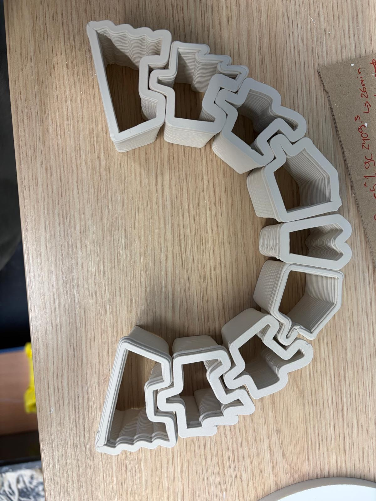
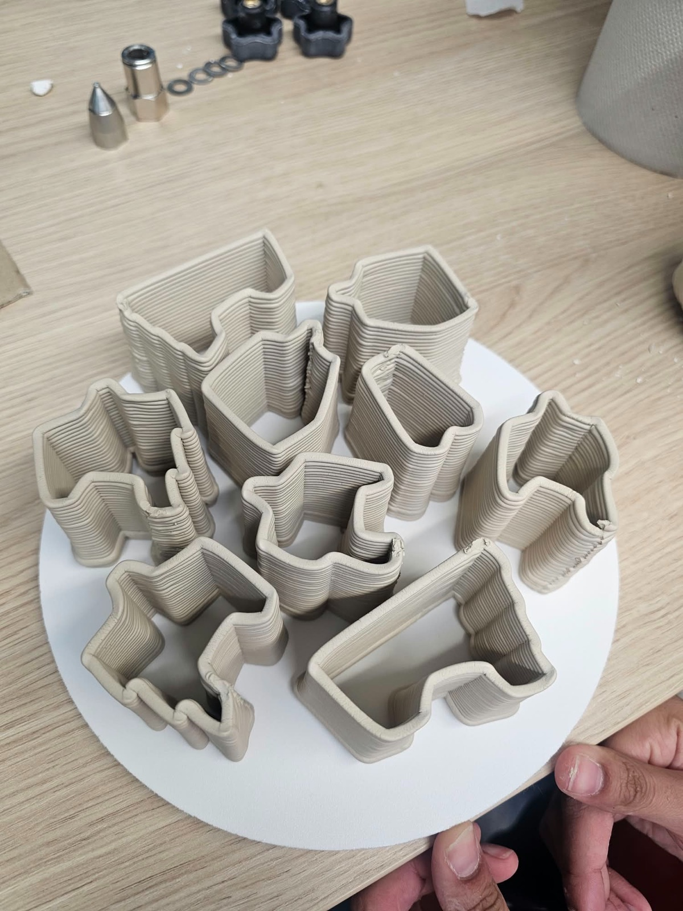
Het resultaat
Na veel pogingen is het gelukt: alle blokken zijn geprint en zo komen ze bij elkaar.
In dit project heb ik vooral gewerkt aan mijn vaardigheden met Grasshopper en met de kleiprinter. Bij Grasshopper heb ik geleerd om meer parametrisch na te denken over mijn ontwerpen en om te werken met extrude en planes. Bij de kleiprinter heb ik geleerd hoe het werkt, hoe je de printer schoonmaakt, hoe je print en hoe je de klei voorbereidt. We kunnen dit nu ook aan anderen uitleggen.
Wat ik anders zou doen: minder afwachtend zijn. We begonnen later met printen, omdat we eerst alles goed wilden weten. Toen we wilden beginnen, bleek wat we hadden geleerd niet genoeg. Veel hebben we toen geleerd van de andere groep, die eerder met printen was begonnen.
Feedback
Feedback groepsgenoot
Tijdens het project Klei Master heb ik de samenwerking met jou als erg prettig ervaren. Je communiceerde duidelijk en goed met de groep en zorgde ervoor dat iedereen op de hoogte bleef van de voortgang en de gemaakte afspraken.
Wat ik ook sterk vond, is dat je niet alleen problemen signaleerde, maar ook zelf actief nadacht over mogelijke oplossingen. Je nam initiatief om problemen aan te pakken en probeerde altijd mee te denken over hoe we als groep verder konden komen.
Daarnaast kwam je je afspraken altijd na en voerde je de afgesproken taken op tijd uit. Je toonde veel verantwoordelijkheidsgevoel en was betrokken bij het gezamenlijke proces.
Een mogelijk ontwikkelpunt is om soms iets minder perfectionistisch te zijn. Je wilt graag dat het werk zo goed mogelijk wordt uitgevoerd, wat natuurlijk een sterke eigenschap is. Toch kan het soms helpen om te accepteren dat iets goed genoeg is, zodat je je tijd en energie efficiënter kunt verdelen.
Ik vond het fijn om met je samen te werken. Je goede communicatie, oplossingsgerichte houding en verantwoordelijkheidsgevoel hebben een positieve bijdrage geleverd aan onze samenwerking en het eindresultaat van het project.
Feedback groepsgenoot
Ik vond de samenwerking bij project 1 en project 2 erg prettig. Hieronder geef ik je mijn feedback. Je communiceert duidelijk en legt je bevindingen helder uit, zodat anderen, zoals ik, je goed kunnen volgen. Als je een taak krijgt, voer je die altijd zo zorgvuldig mogelijk uit. Je onderzoek is ook echt grondig, zoals bij de Termite-template, waarbij je precies uitzocht hoe je ermee moest werken. Als ik iets niet begrijp, kan ik altijd bij je terecht en help je me graag. Daardoor weet ik dat ik in een groepsopdracht op je kan rekenen. Ik vind het ook echt top dat je het wilt bespreken met de groep als de samenwerking niet goed gaat.
Ik heb nog twee tips. De eerste is dat je het meteen moet zeggen als je het ergens niet mee eens bent, in plaats van het naar een later moment te schuiven. Dan kan de groep er direct rekening mee houden. De tweede is dat je niet het initiatief durft te nemen bij presentaties. Zeg gerust: "Ik wil graag presenteren." Je presenteert duidelijk en goed, dus ga gerust wat vaker uit je comfortzone.
Aangetoonde leerdoelen
-
1.2
Verzamelt, analyseert en interpreteert data kritisch om onderbouwde oplossingen te ontwikkelen.
-
1.4
Reflecteert kritisch op het onderzoek en/of ontwerpproces en valideert de impact van “oplossingen” met stakeholders (opdrachtgever, adviseurs, medestudenten etc.).
-
3.3
Signaleert technologische innovaties en eigent zich zelfstandig nieuwe tools en werkwijzen toe om de professionele praktijk te versterken.
-
4.1
De student handelt professioneel. Zie onderstaand diagram, professioneel handelen HBO.